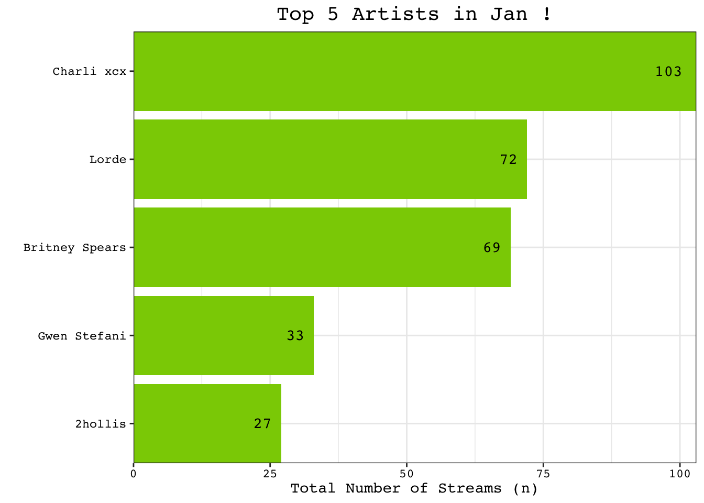
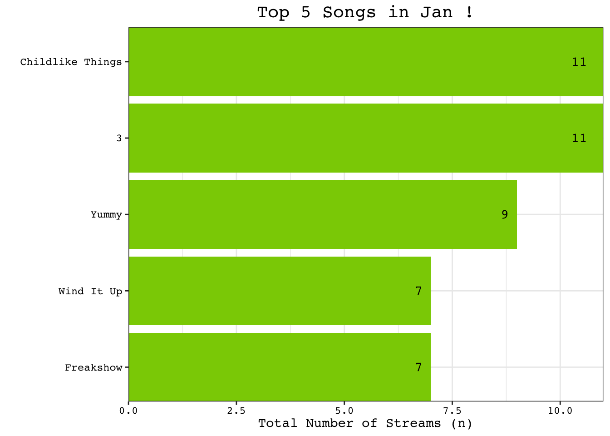
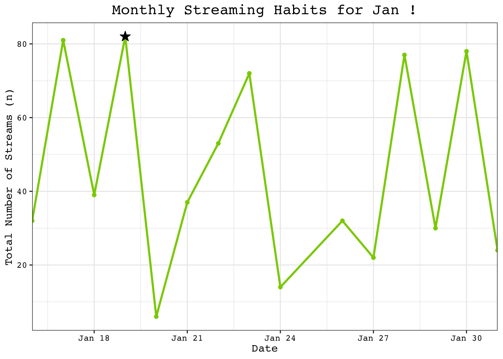
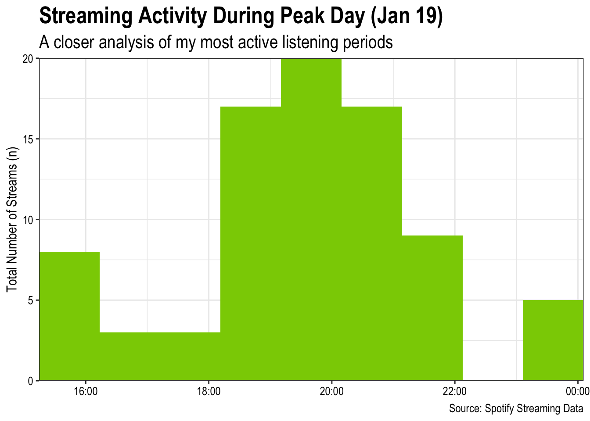

Code
library(hms)
library(ggstar)
library(lubridate)
library(tidyverse)
library(googlesheets4)A Deep Dive into My Monthly Streaming
library(hms)
library(ggstar)
library(lubridate)
library(tidyverse)
library(googlesheets4)spotify_data_raw <- read_sheet("https://docs.google.com/spreadsheets/d/1U2XrypJcbxnK-hb4GnnqcOejY00HU1kcCVIfWHB_Q7A/edit?usp=sharing")# Preview the raw data
head(spotify_data_raw, n = 5)# A tibble: 5 × 5
January 16, 2025 at 04:45…¹ `Get Back` `Britney Spears` 59Xb5YkZ1AFrMD19T6cK…²
<chr> <list> <chr> <chr>
1 January 16, 2025 at 07:32PM <chr [1]> Britney Spears 2EvwLVrnYbCZEG6Kx5DCRy
2 January 16, 2025 at 07:36PM <chr [1]> Britney Spears 6ic8OlLUNEATToEFU3xmaH
3 January 16, 2025 at 07:39PM <chr [1]> Britney Spears 5X9tIJkTHxB19SK3FtnHT5
4 January 16, 2025 at 09:55PM <chr [1]> Bad Bunny 6J5kc12BW5HuP3d7C3vvx8
5 January 16, 2025 at 09:59PM <chr [1]> Bad Bunny 4c2Pc0NrfkesPR0jff6q3F
# ℹ abbreviated names: ¹`January 16, 2025 at 04:45PM`,
# ²`59Xb5YkZ1AFrMD19T6cKr8`
# ℹ 1 more variable:
# `https://open.spotify.com/track/59Xb5YkZ1AFrMD19T6cKr8` <chr># Create a function to tidy the Spotify dataset
spotify_data_processed <- function(spotify_data_raw) {
# Save the original column names
current_colnames <- colnames(spotify_data_raw)
# Add the current column names as the first row
spotify_data_raw <- rbind(current_colnames, spotify_data_raw)
# Assign new, more descriptive column names
new_colnames <- c("date", "track_name", "artist", "track_id", "link")
colnames(spotify_data_raw) <- new_colnames
# Clean the "date" column
spotify_data_raw$date <- gsub(" at", "", spotify_data_raw$date)
# Convert the "date" column to a proper date-time format
spotify_data_raw$date <- mdy_hm(spotify_data_raw$date)
# Convert the "track_name" column to a character type
spotify_data_raw$track_name <- as.character(spotify_data_raw$track_name)
# Return the cleaned and processed dataset
return(spotify_data_raw)
}
# Apply the cleaning function to the raw dataset
spotify_data_clean <- spotify_data_processed(spotify_data_raw)
# Preview the cleaned dataset
head(spotify_data_clean, n = 5)# A tibble: 5 × 5
date track_name artist track_id link
<dttm> <chr> <chr> <chr> <chr>
1 2025-01-16 16:45:00 Get Back Britney Spears 59Xb5YkZ1AFrMD19T6cKr8 https:/…
2 2025-01-16 19:32:00 Piece of Me Britney Spears 2EvwLVrnYbCZEG6Kx5DCRy https:/…
3 2025-01-16 19:36:00 Gimme More Britney Spears 6ic8OlLUNEATToEFU3xmaH https:/…
4 2025-01-16 19:39:00 Freakshow Britney Spears 5X9tIJkTHxB19SK3FtnHT5 https:/…
5 2025-01-16 21:55:00 EoO Bad Bunny 6J5kc12BW5HuP3d7C3vvx8 https:/…# Create monthly datasets
monthly_datasets <- spotify_data_clean %>%
mutate(ymd_date = as.Date(date),
md_date = format(ymd_date, "%b %d"),
month = month(date, label = TRUE),
time = as_hms(date)) %>%
group_by(month) %>%
group_split()
# Month
i <- 1# Summarize the number of unique artists for the given month
u_artists <- monthly_datasets[[i]] %>%
summarize(month = month[i], total_unique_artists = n_distinct(artist))
# Print a message with the total number of unique artists and the month
message(paste("You listened to", u_artists$total_unique_artists, "different artists in", u_artists$month, "!"))You listened to 116 different artists in Jan !# Summarize the top 5 artists for the given month
top_5_artists <- monthly_datasets[[i]] %>%
group_by(artist) %>%
summarize(total_streams = sum(n())) %>%
arrange(desc(total_streams)) %>%
slice_head(n = 5)
# Create a bar plot for the top 5 artists
ggplot(data = top_5_artists,
aes(x = reorder(artist, total_streams), y = total_streams)) +
geom_bar(stat = "identity",
fill = "#8ACE00") +
geom_text(aes(label = total_streams), hjust = 1.5, family = "Courier") +
labs(x = "",
y = "Total Number of Streams (n)",
title = paste("Top 5 Artists in", monthly_datasets[[i]]$month, "!")) +
scale_x_discrete(expand = c(0, 0)) +
scale_y_continuous(expand = c(0, 0)) +
theme_bw() +
theme(axis.text.x = element_text(family = "Courier", color = "black"),
axis.text.y = element_text(family = "Courier", color = "black"),
axis.title.x = element_text(family = "Courier"),
axis.title.y = element_text(family = "Courier"),
plot.title = element_text(family = "Courier", size = 15, hjust = 0.5)) +
coord_flip()
# Summarize the most-streamed song by the top artist
top_artist_song <- inner_join(monthly_datasets[[i]], top_5_artists[1, 1:2], by = "artist") %>%
group_by(track_name) %>%
summarize(total_streams = sum(n())) %>%
arrange(desc(total_streams)) %>%
slice_head(n = 1)
# Print a message showing the most-streamed song by the top artist and its total streams
message(paste(top_artist_song$track_name, "is your most-played song by", top_5_artists$artist[1], ", with a total of", top_artist_song$total_streams, "streams !"))Delicious (feat. Tommy Cash) is your most-played song by Charli xcx , with a total of 6 streams !# Print a message with the total number of track streams for the given month
message(paste("You listened to a total of", nrow(monthly_datasets[[i]]), "songs in", monthly_datasets[[i]]$month[1], "!"))You listened to a total of 679 songs in Jan !# Summarize the number of unique tracks for the given month
u_tracks <- monthly_datasets[[i]] %>%
summarize(month = month[i], total_unique_tracks = n_distinct(track_name))
# Print a message with the total number of unique tracks and the month
message(paste("Out of those", nrow(monthly_datasets[[i]]), ",", u_tracks$total_unique_tracks, "were different songs !"))Out of those 679 , 348 were different songs !# Summarize the top 5 tracks for the given month
top_5_tracks <- monthly_datasets[[i]] %>%
group_by(track_name) %>%
summarize(total_streams = sum(n())) %>%
arrange(desc(total_streams)) %>%
slice_head(n = 5)
# Create a bar plot for the top 5 tracks
ggplot(data = top_5_tracks,
aes(x = reorder(track_name, total_streams), y = total_streams)) +
geom_bar(stat = "identity",
fill = "#8ACE00") +
geom_text(aes(label = total_streams), hjust = 2, family = "Courier") +
labs(x = "",
y = "Total Number of Streams (n)",
title = paste("Top 5 Songs in", monthly_datasets[[i]]$month, "!")) +
scale_x_discrete(expand = c(0, 0)) +
scale_y_continuous(expand = c(0, 0)) +
theme_bw() +
theme(axis.text.x = element_text(family = "Courier", color = "black"),
axis.text.y = element_text(family = "Courier", color = "black"),
axis.title.x = element_text(family = "Courier"),
axis.title.y = element_text(family = "Courier"),
plot.title = element_text(family = "Courier", size = 15, hjust = 0.5)) +
coord_flip()
# Summarize the number of songs streamed per day for the given month
daily_songs <- monthly_datasets[[i]] %>%
group_by(ymd_date) %>%
summarize(n_songs = n()) %>%
mutate(md_date = format(ymd_date, "%b %d")) %>%
arrange(desc(n_songs))
# Print a message for the highest streaming day
message(paste("Your highest streaming day was", daily_songs$md_date[1], "with", daily_songs$n_songs[1], "songs streamed !"))Your highest streaming day was Jan 19 with 82 songs streamed !# Extract the last row of the dataframe (lowest streaming day)
lowest_streaming_day <- daily_songs %>%
slice_tail(n = 1)
# Print a message for the lowest streaming day
message(paste("Your lowest streaming day was", lowest_streaming_day$md_date, "with", lowest_streaming_day$n_songs, "songs streamed !"))Your lowest streaming day was Jan 20 with 6 songs streamed !# Create a line plot of daily streaming habits
ggplot(data = daily_songs, aes(x = ymd_date, y = n_songs)) +
geom_point(color = "#8ACE00") +
geom_line(color = "#8ACE00", linewidth = 1) +
geom_star(data = daily_songs[1, ], fill = "black", size = 3) +
labs(x = "Date",
y = "Total Number of Streams (n)",
title = paste("Monthly Streaming Habits for", monthly_datasets[[i]]$month, "!")) +
scale_x_date(expand = c(0, 0), date_breaks = "3 days", date_labels = "%b %d") +
theme_bw() +
theme(axis.text.x = element_text(family = "Courier", color = "black"),
axis.text.y = element_text(family = "Courier", color = "black"),
axis.title.x = element_text(family = "Courier"),
axis.title.y = element_text(family = "Courier"),
plot.title = element_text(family = "Courier", size = 15, hjust = 0.5))
# Extract the day with the highest streams
highest_streaming_day <- inner_join(monthly_datasets[[i]], daily_songs[1, 1:2], by = "ymd_date")
# Create a histogram of streaming times for the highest streaming day
ggplot(data = highest_streaming_day, aes(x = time)) +
geom_histogram(bins = 30, fill = "#8ACE00") +
labs(x = "Time",
y = "Total Number of Streams (n)",
title = paste("Highest Streaming Day,", daily_songs$md_date[1], "!")) +
scale_x_time(expand = c(0, 0)) +
scale_y_continuous(expand = c(0, 0)) +
theme_bw() +
theme(axis.text.x = element_text(family = "Courier", color = "black"),
axis.text.y = element_text(family = "Courier", color = "black"),
axis.title.x = element_text(family = "Courier"),
axis.title.y = element_text(family = "Courier"),
plot.title = element_text(family = "Courier", size = 15, hjust = 0.5))
| Data | Citation | Link |
|---|---|---|
| Google Sheets | Torres, M. (2025). Spotify Wrapped 2025 [Google Sheets]. Google. | https://docs.google.com/spreadsheets/d/1U2XrypJcbxnK-hb4GnnqcOejY00HU1kcCVIfWHB_Q7A/edit?gid=0#gid=0 |
| My Spotify Wrapped | IFTTT. (n.d.). My Spotify Wrapped [Applet]. | https://ifttt.com/applets/ptQiGLyZ-my-spotify-wrapped |
| Spotify | Spotify. (n.d.). Spotify [Music streaming service] | https://www.spotify.com |